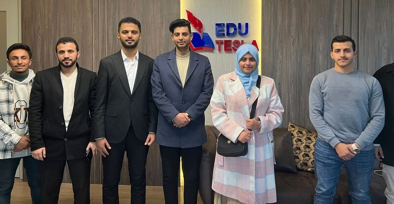
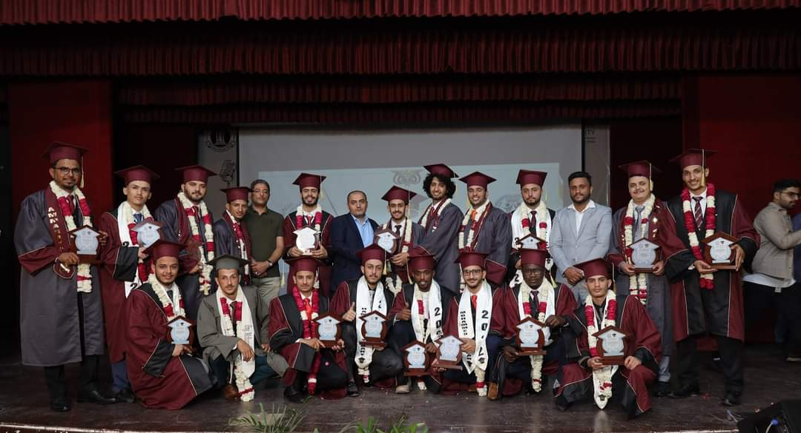

Yemeni Student Foundation Scholarship Awards
Published on January 18, 2024

The Yemeni Student Foundation is proud to announce the recipients of this year's scholarship awards. These outstanding students have shown exceptional dedication to their studies and communities.
We believe in the power of education to change lives and we are committed to supporting students in their academic journey. Congratulations to all the awardees!
Yemeni Student Foundation Annual Meetup
Published on February 18, 2024
Our annual meetup was a resounding success! Students, alumni, and faculty came together to network, share experiences, and discuss the future of education in Yemen.
It was inspiring to see so many passionate individuals dedicated to making a difference in their communities. We look forward to next year's meetup!
Spotlight on Yemeni Student Foundation Alumni
Published on March 18, 2024

In our latest blog post, we shine a spotlight on some of our successful alumni. These individuals have used their education to make significant contributions to their fields and communities.
We are incredibly proud of our alumni and their achievements. They are a testament to the power of education and the impact of our foundation.
Yemeni Student Foundation Sports Activities
Published on April 18, 2024
We are excited to announce the schedule of our upcoming sports activities. These activities are designed to promote physical fitness and team spirit among our students.
We believe in fostering a culture of active lifestyle and sportsmanship among our students. We can't wait to see everyone participate and enjoy!
Yemeni Student Foundation Community Outreach
Published on May 18, 2024
Our community outreach program continues to make a difference in the lives of many. From tutoring programs to food drives, our students are dedicated to giving back to their communities.
We are proud of the positive impact our students are making and are committed to supporting their efforts. Together, we can make a difference!